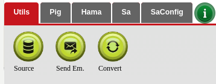
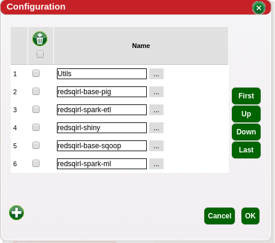

Tabs are a way of ordering and organizing actions together. Many tabs can be created to hold actions. It may be a good idea to add actions to a tab that may be used often in the same type of workflow
| Action Footer with user defined tabs |  |
| Opening Tabs editior can be done by clicking this symbol | |
| Edit and create new tabs by writing a name and clicking the plus symbol, then select the actions for that tab |  |